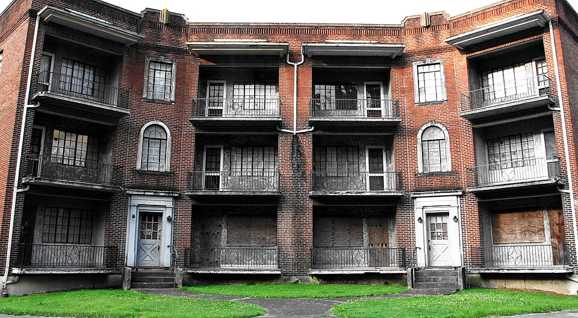
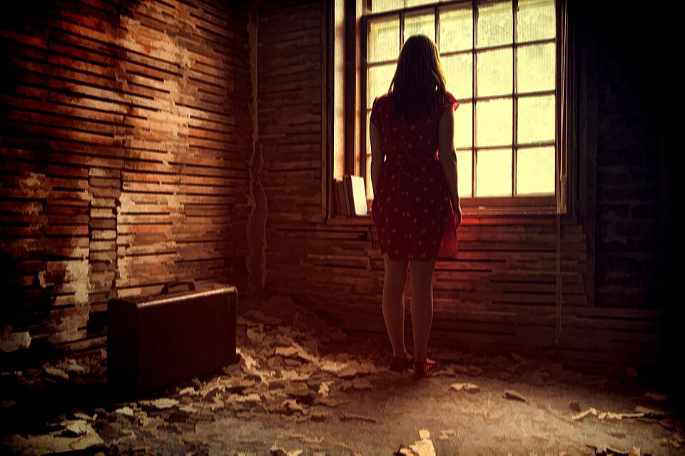
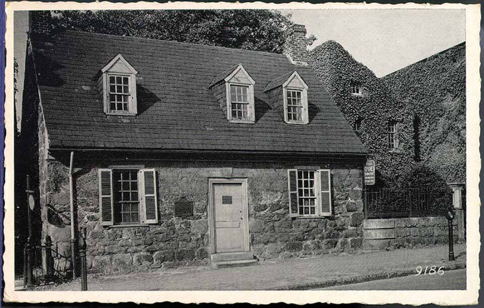
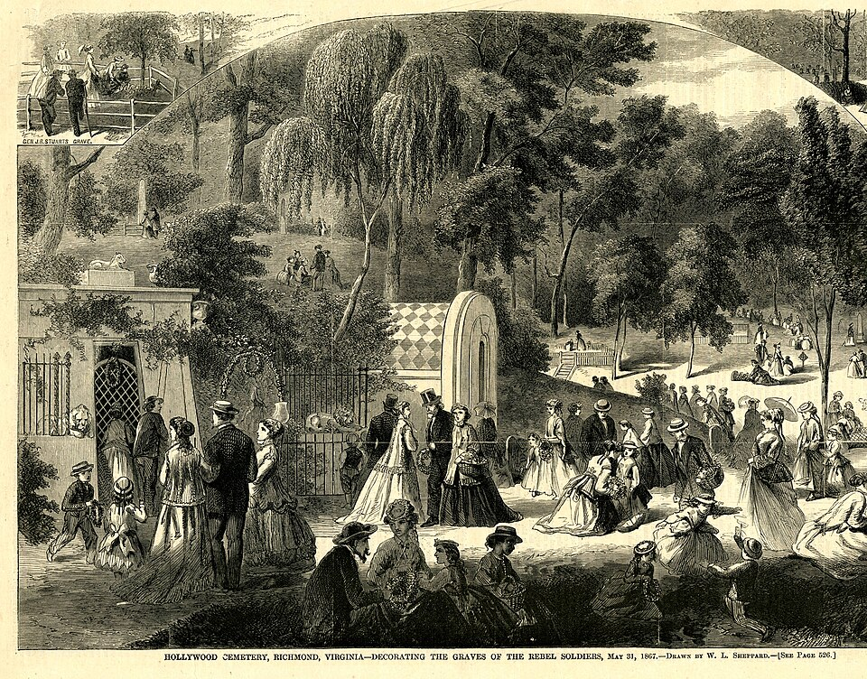

Haunted Virginia Photo Gallery
Explore photographs of mysterious places, historic buildings, abandoned locations, and landscapes connected to Virginia's haunted history.




Haunted Virginia Video
Watch this short video featuring a location or landscape connected to the mysterious history of Virginia.
Media Sources
Photo 1: Photograph of an abandoned apartment building in Williamson, West Virginia.
Photo 2: End Of Day photograph.
Photo 3: Old Stone House photograph.
Photo 4: Original photograph by Addison Smith.
Video: Original footage recorded by Addison Smith.